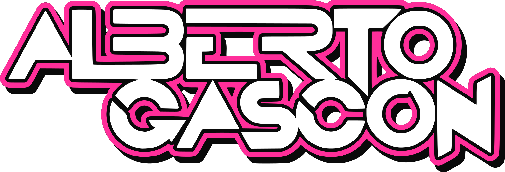
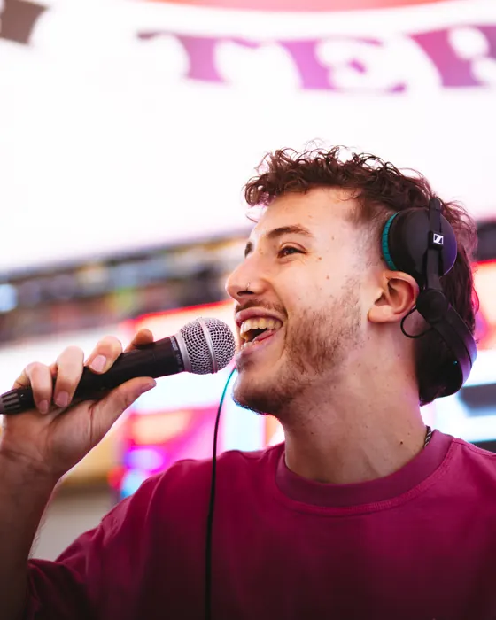

Discotecas
Sesiones para salas y discotecas comerciales: éxitos, remember y lo que esté sonando ahora, leyendo la pista en cada momento.
Discotecas · Festivales · Fiestas patronales · Eventos · BodasDesplazamiento a toda España

Servicios
Sesiones para salas y discotecas comerciales: éxitos, remember y lo que esté sonando ahora, leyendo la pista en cada momento.
He pinchado en MotoGP en Motorland Alcañiz y en Cheste. Sé trabajar con producción, horarios cerrados y mucho público.
Verbenas, peñas y noches grandes de fiestas. Llevo años en las de la provincia de Teruel y sé lo que pide la plaza a cada hora.
Cenas y fiestas de empresa, aniversarios, inauguraciones y celebraciones privadas, con música adaptada a tu gente.
Desde el cóctel hasta el último tema de la barra libre. Preparamos juntos la música de los momentos clave y yo leo la pista el resto de la noche.

Sobre mí
DJ de Teruel afincado en Valencia. Pincho desde los 13 años y llevo 8 como profesional en discotecas, festivales, fiestas patronales, eventos privados y bodas de toda España.
Además de DJ soy técnico de sonido: estudié el Grado Superior de Sonido para Audiovisuales y Espectáculos en Comenius y Producción Musical e Ingeniería de Sonido en Millenia Estudios. Eso se nota en cómo suena el equipo y en que los imprevistos técnicos se resuelven sin que la fiesta pare.
Dónde he pinchado
En cabina
On Tour
Cómo trabajo
Fecha, lugar y tipo de evento. Con eso ya te digo si estoy libre.
Te paso precio cerrado según horas, equipo y desplazamiento.
Reservamos la fecha por escrito para que los dos estemos tranquilos.
Llego con tiempo, monto, pruebo y la fiesta empieza a su hora.
Para organizadores
Preguntas frecuentes
Sí, me desplazo a toda España. Soy de Teruel y vivo en Valencia, así que la mayoría de mis bolos son en Teruel, Valencia y Aragón, pero si tu evento está en otra provincia, escríbeme y lo organizamos.
Discotecas y salas comerciales, festivales, fiestas patronales y verbenas, eventos privados y de empresa, y bodas. He pinchado en MotoGP Motorland Alcañiz, MotoGP Cheste, La Encerrona, Los Que Faltaban, Los Chachos, Black y las Fiestas del Ángel de Teruel.
Sí. Puedo llevar mi Denon DJ Prime 4. Si la sala ya tiene cabina, trabajo con Pioneer CDJ-3000 o superiores y mesa DJM-900NXS2, DJM-A9 o DJM-V10.
Depende de las horas, del equipo que haga falta y del desplazamiento. Cuéntame la fecha, el lugar y el tipo de evento y te paso un precio cerrado sin compromiso.
Sí. Para comisiones de fiestas, ayuntamientos y salas organizo el cartel con DJs de la zona de confianza, con un solo contacto para todas las noches.
Pincho desde los 13 años y llevo 8 como DJ profesional, con más de 200 bolos. Tengo 24 años y además soy técnico de sonido: estudié en Comenius y en Millenia Estudios (Valencia).
Booking
Para comisiones de fiestas, ayuntamientos y salas: os organizo el cartel con DJs de la zona que conozco y en los que confío. Un solo contacto para todas las noches.
Presupuesto
Escríbeme por WhatsApp o rellena el formulario con la fecha y el lugar. Te contesto con disponibilidad y precio.